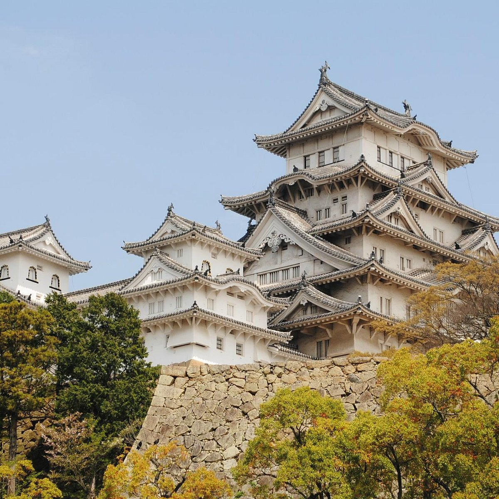

Japão (em japonês: 日本; romaniz.: Nihon ou Nippon; lit: "Sol nascente") oficialmente Estado do Japão (em japonês: 日本国; romaniz.: Nippon-kokuⓘ ou koku; lit: "origem do Sol" ou "terra do Sol nascente") é um país insular da Ásia Oriental. Localizado no Oceano Pacífico, a leste do Mar do Japão, da China, da Coreia do Norte, da Coreia do Sul e da Rússia, estendendo-se do Mar de Okhotsk, no norte, ao Mar da China Oriental e Taiwan, ao sul.
O país é um arquipélago de 6 852 ilhas,[9] cujas quatro maiores são Honshu, Hokkaido, Kyushu e Shikoku, representando em conjunto 97% da área terrestre nacional. A maior parte das ilhas é montanhosa, com muitos vulcões, como, por exemplo, os Alpes japoneses e o Monte Fuji. O Japão possui a décima primeira maior população do mundo, com cerca de 125,4 milhões de habitantes.[10] A Região Metropolitana de Tóquio, que inclui a capital de facto de Tóquio e várias prefeituras adjacentes, é a maior área metropolitana do mundo, com mais de 37,4 milhões de habitantes.[11]
Pesquisas arqueológicas indicam que humanos já viviam nas ilhas japonesas no período Paleolítico Superior. A primeira menção escrita do Japão começa com uma breve aparição em textos históricos chineses do século I d.C.. A influência do resto do mundo seguida por longos períodos de isolamento tem caracterizado a história do país. Desde a sua constituição em 1947, o Japão se manteve como uma monarquia constitucional unitária com um imperador e um parlamento eleito, a Dieta.
はじめまして。→ Prazer em conhecê-lo.
私の名前はルーベンスです。→ Meu nome é Rubens.
| Japão | Curiosidades | |||
|---|---|---|---|---|
| População | 125,7 milhões | Com cerca de 125,7 milhões de habitantes, o Japão é o 11º país mais populoso do mundo, mesmo tendo uma das menores taxas de natalidade. | ||
| Área | 377.975 km² | Apesar de ter uma área de 377.975 km², o Japão é formado por mais de 6.800 ilhas, sendoque cerca de 70% do território é montanhoso. | ||
| Idioma | Japonês | O japonês é o idioma oficial, e além dos alfabetos silábicos hiragana e katakana, os japoneses também utilizam milhares de ideogramas chamados kanji no dia a dia. | ||
こんにちは (Konnichiwa) = Olá |
||||
| Moeda | Iene (¥) | |||
Mais tarde a capital seria novamente transferida para Heian-kio, a moderna Quioto, e dar-se-ia o rompimento entre o imperador Kammu e os monges budistas. A partir daí foi estabelecida a escrita japonesa e uma nova literatura.[27] Foi nesse período de paz que surgiram a classe dos samurais como guardas da corte.[21][22] Contudo as disputas surgidas entre os clãs guerreiros Taira e Minamoto levaram a uma nova guerra civil que só teve fim em 1185, com a ascensão dos Minamoto ao poder. Este clã estabeleceria o governo do xogunato em Kamakura. Enquanto seguia as leis do governo imperial de Heian, o governo Kamakura foi exercido por uma rede de samurais em todo o país que se comprometiam a manter a paz. Desde que o poder imperial era exercido localmente pelo xogum, os samurais foram capazes de assumir a terra dos ricos proprietários de terra aristocráticos (daimiôs) e, portanto, levaram o governo imperial de Heian em Quioto a tornar-se ainda mais fraco. Um novo período de paz e enriquecimento econômico e cultural foi estabelecido até uma nova tentativa mal sucedida de restauração da autoridade imperial feita pelo Imperador Go-Daigo.[28][29]

O Japão é um país insular que se estende ao longo da costa leste da Ásia. O litoral marítimo do Japão é aproximadamente quatro vezes maior que o brasileiro.[63] As ilhas principais, de norte para sul, são: Hokkaido, Honshu, Shikoku e Kyushu. Além destas maiores, o Japão inclui mais de seis mil outras menores, parte das quais constituem as ilhas Riukyu, inclusive Okinawa, que se estendem a sudoeste de Kyushu até perto de Taiwan.[64]
Entre 70% e 80% do país é coberto por florestas e de relevo montanhoso[65][66] com uma cordilheira no centro das ilhas principais, de forma que as pequenas planícies costeiras se tornam as áreas mais povoadas do país.

O clima japonês apresenta uma clara diferenciação entre as estações e sofre a influência de massas de ar frias vindas da Sibéria no inverno, bem como de massas de ar quentes do Pacífico no verão. Os tufões são comuns entre o fim do verão e o início do outono. O país pode ser dividido em quatro regiões climáticas: a de Hokkaido, de clima subártico, a da costa do Pacífico, temperado, a da costa do Mar do Japão, mais chuvoso, e o da região sudoeste, subtropical.

Terra de contrastes, onde as tradições milenares se encontram com a tecnologia de ponta, o Japão também é um destino que cativa os corações de todos os intercambistas!
O Castelo Himeji, também é conhecido como Castelo da Garça Branca, é um tesouro nacional japonês e patrimônio mundial. Seu status como um dos 12 castelos originais remanescentes do Japão torna essa fortaleza obrigatória para qualquer pessoa interessada na história do Japão.
